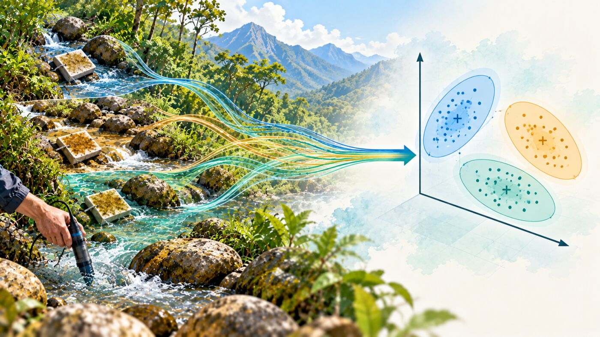
Taller 7. Ordenación Lineal: Análisis de Componentes Principales (PCA)
Materiales requeridos para el taller en clase
En el siguiente enlace se puede descargar el archivo comprimido del taller, con las bases de datos de microalgas perifíticas y de mesozooplancton estuarino (📰 Taller 7. Análisis de componentes principales).
Nota: una vez se descarguen los materiales, se requiere descomprimirlos antes de realizar cualquier procedimiento y seguir las orientaciones del docente para realizar los ejercicios requeridos.
Diapositivas en vivo - Slides.com

- Diapositivas del Taller 7. Análisis de componentes principales — Pendiente de incluir.
Objetivos del taller
Este taller acompaña la sesión del sábado en la tarde de la Semana 3 (S9) y la presentación 07 (“Ordenación lineal: Análisis de Componentes Principales”). Usa las matrices F, X y Y de microalgas construidas en el Taller 5 y la exploración del Taller 6 (RA2, con lectura ecológica RA3). Al terminar, se podrá:
- Preparar una matriz ambiental para el PCA: decidir qué variables transformar y por qué se estandariza (PCA de correlación).
- Ajustar un PCA en R e interpretar sus cuatro productos: autovalores, cargas, coordenadas (scores) y contribuciones.
- Decidir cuántos ejes retener con más de un criterio y declarar el criterio usado.
- Leer un biplot según el escalamiento, añadir elipses por grupo y proyectar variables suplementarias con
envfit(), sin confundir una figura descriptiva con una prueba formal.
NotaBases de datos
- Microalgas (
Microalgas.xlsx): microalgas perifíticas en tres tributarios del río Gaira, Sierra Nevada de Santa Marta (Osorio Ávila et al., 2015). Cada fila es un sustrato artificial en un tributario (T1 a T3) y una visita semanal de colonización (1 a 8). - Plancton (hoja
Riquezadeplancton.xlsx): mesozooplancton del estuario del golfo de Urabá, Caribe colombiano (Vargas-Ospina et al., 2025). Se usa en el estudio de caso.
Código
# Librerías requeridas
library(tidyverse)
library(readxl)
library(kableExtra)
library(corrplot)
library(vegan)
library(factoextra)
# Paletas del módulo
col_trib <- c(T1 = "#2C6FB7", T2 = "#E3A33B", T3 = "#3E9C8F")
col_zona <- c(Fluvial = "#A6761D",
Estuarina = "#66A61E",
Marina = "#1F78B4")
# Números con dos decimales fijos para el texto (−0.60 y no −0.6)
f2 <- function(x) formatC(x, format = "f", digits = 2)Código
# Matrices F, X y Y de microalgas (igual que en la Parte 4 del Taller 5)
alg <- read_excel("Microalgas.xlsx", sheet = "Microalgas") %>%
rename(Fragilaria = Fragillaria,
Nitzschia = Nitzchia,
Surirella = Surilella,
Gyrosigma = Girosigma,
Achnanthes = Achnantes) %>%
mutate(Tributario = factor(Tributario),
Visita = factor(as.integer(sub(".*\\.", "", Cod)))) # T1.3 → 3
F_alg <- alg %>% select(Cod, Tributario, Visita)
X_alg <- alg %>% select(Amonio:Temp)
Y_alg <- alg %>% select(Fragilaria:Pinnularia)
# Control: mismas filas en las tres matrices
c(F = nrow(F_alg), X = nrow(X_alg), Y = nrow(Y_alg)) F X Y
24 24 24 La base tiene 24 muestras (3 tributarios × 8 visitas), 10 variables ambientales (matriz X, la que entra al PCA) y 21 géneros (matriz Y, que se usa como suplementaria en la Parte 5).
Antes de empezar: qué hace un PCA
Un PCA gira los ejes de la nube de muestras: el primer componente principal (CP1) sigue la dirección en la que las muestras varían más; el segundo (CP2) es perpendicular al primero y recoge la mayor parte de lo que queda, y así sucesivamente. Con 10 variables salen 10 ejes, ordenados de mayor a menor varianza. Si las variables son redundantes (cambian juntas), los primeros ejes concentran casi toda la información y se pueden graficar en un plano.
Todo PCA entrega cuatro productos:
| Producto | Qué dice | Objeto en R (prcomp) |
Se usa para |
|---|---|---|---|
| Autovalor (λ) | Varianza que recoge cada eje; en un PCA de correlación suman el número de variables | pca$sdev^2 |
Decidir cuántos ejes retener (Parte 2) |
| Carga (autovector) | Peso de cada variable en el eje; el signo da la dirección | pca$rotation |
Nombrar los ejes (Parte 3) |
| Contribución | Porcentaje con que cada variable construye un eje (carga² × 100) | fviz_contrib() |
Comparar con lo esperado si todas pesaran igual (Parte 3) |
| Coordenada (score) | Posición de cada muestra en los ejes nuevos | pca$x |
Graficar las muestras y sus grupos (Parte 4) |
El PCA es una ordenación no restringida: los ejes resumen la variación de una sola matriz (aquí X) sin mirar otras variables. Los factores (tributario) y las especies (Y) se proyectan después, para interpretar el patrón, no para construirlo. Cuando la pregunta es cuánto de Y explica X, la técnica es una ordenación restringida (RDA o CCA, Taller 9).
Parte 1 — De X a una matriz lista para el PCA: microalgas
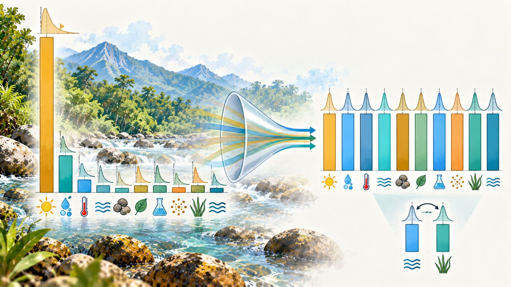
Pregunta: ¿Pueden entrar las diez variables ambientales al PCA tal como se midieron?
Escalas distintas
Código
# Varianza de cada variable ambiental (datos crudos)
var_crudo <- sapply(X_alg, var)
signif(sort(var_crudo, decreasing = TRUE), 2) Luz Conductividad Amonio Nitrato Temp
1.9e+08 2.4e+02 1.6e+00 1.6e+00 1.1e+00
Oxigeno pH Caudal Vel_Corriente Nitrito
9.7e-01 7.9e-01 3.1e-01 2.1e-01 5.4e-02 La varianza de la luz (≈ 1.9e+08) es miles de millones de veces la del nitrito (≈ 0.054), solo porque se mide en unidades más grandes. Un PCA calculado sobre estos valores (PCA de covarianza) dejaría a la luz sola en el primer eje:
Código
# PCA de covarianza con los datos crudos: contribución de cada variable al CP1
pca_crudo <- prcomp(X_alg)
round(100 * pca_crudo$rotation[, 1]^2, 1) Amonio Nitrito Nitrato Oxigeno pH
0 0 0 0 0
Conductividad Caudal Vel_Corriente Luz Temp
0 0 0 100 0 La luz aporta el 100 % del CP1: ese eje mide unidades, no ecología. Por eso, cuando las variables están en unidades distintas, se estandarizan (media 0, desviación estándar 1) y el PCA se calcula sobre la matriz de correlación, en la que cada variable pesa lo mismo (presentación 07, diap. 8).
Asimetría: transformar antes de estandarizar
Estandarizar iguala las escalas, pero no corrige la forma de la distribución. Unos pocos valores muy altos (por ejemplo, días de mucha luz o un pulso de amonio) pesan demasiado en las correlaciones. Se mide la asimetría de cada variable y se compara antes y después de log10(x + 1):
Código
# Coeficiente de asimetría (0 = simétrica; > 1 o < −1 = muy asimétrica)
asimetria <- function(x) mean((x - mean(x))^3) / sd(x)^3
# X transformada: log10(x + 1) a todas las variables salvo el pH (ya es logarítmico)
X_log <- X_alg %>% mutate(across(-pH, ~ log10(.x + 1)))
# Asimetría antes y después
asim <- tibble(Variable = names(X_alg),
Crudos = sapply(X_alg, asimetria),
`log10(x + 1)` = sapply(X_log, asimetria))
asim %>%
kbl(booktabs = TRUE, digits = 2) %>%
kable_classic(full_width = F) %>%
row_spec(0, bold = TRUE)| Variable | Crudos | log10(x + 1) |
|---|---|---|
| Amonio | 3.02 | 1.96 |
| Nitrito | 0.87 | 0.52 |
| Nitrato | 1.49 | 1.05 |
| Oxigeno | -0.07 | -0.22 |
| pH | -0.20 | -0.20 |
| Conductividad | 0.65 | 0.64 |
| Caudal | 0.42 | 0.25 |
| Vel_Corriente | 0.31 | 0.17 |
| Luz | 2.75 | 0.08 |
| Temp | -0.74 | -0.84 |
Código
# Histogramas de luz, amonio y caudal: crudos frente a transformados
bind_rows(Crudos = X_alg, `log10(x + 1)` = X_log, .id = "Datos") %>%
select(Datos, Luz, Amonio, Caudal) %>%
pivot_longer(-Datos, names_to = "Variable", values_to = "Valor") %>%
ggplot(aes(x = Valor)) +
geom_histogram(bins = 8, fill = "#9DBFE3", color = "white") +
facet_wrap(Datos ~ Variable, scales = "free", nrow = 2) +
labs(x = NULL, y = "Muestras") +
theme_bw()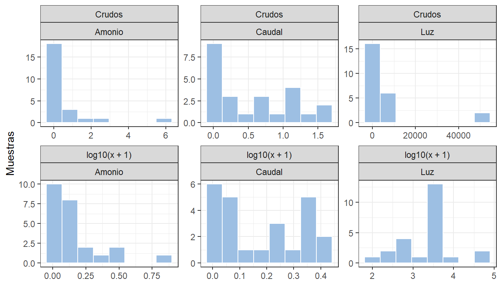
La luz pasa de una asimetría de 2.75 a 0.08. El amonio mejora (de 3.02 a 1.96), pero sigue sesgado: la transformación reduce el problema, no siempre lo elimina. El pH no se transforma porque ya es una escala logarítmica.
NotaPara variables positivas sin ceros
En esta base no hay ceros, así que log10(x) daría casi lo mismo. El + 1 se mantiene por consistencia con las abundancias (Taller 5), pero cambia la forma de la transformación cuando los valores son menores que 1 (como el caudal o el nitrito). En una base propia, la decisión se declara en los métodos.
Redundancia: la condición para resumir
Código
# Matriz de correlación de X transformada
R_X <- cor(X_log)
corrplot.mixed(R_X, upper = "ellipse", lower = "number",
tl.col = "black", tl.pos = "lt", number.cex = 0.7)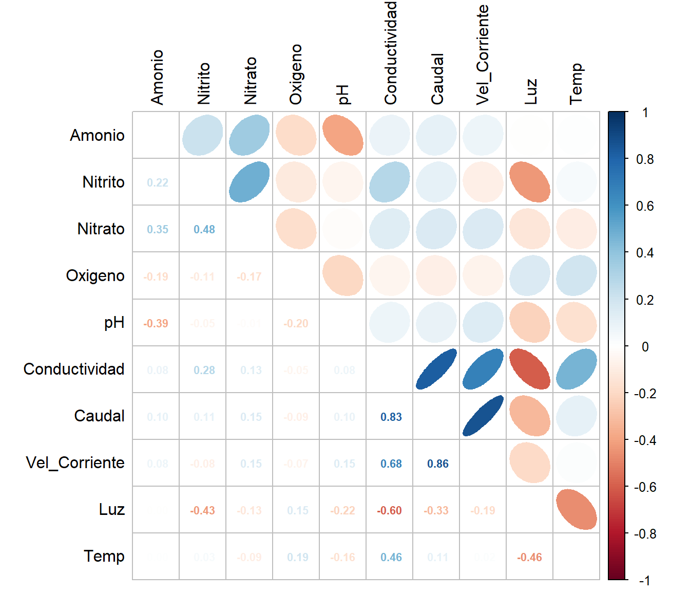
Con 10 variables hay 45 pares de dispersión: demasiados para verlos uno a uno. Pero hay bloques redundantes: conductividad y caudal tienen r = 0.83, y la luz se opone a la conductividad (r = -0.60). El PCA aprovecha esa redundancia: si dos variables cuentan casi la misma historia, un solo eje puede representarlas.
Para discutir: si las 10 variables fueran independientes entre sí (todas las r ≈ 0), ¿qué porcentaje de varianza recogería cada eje? ¿Tendría sentido hacer un PCA?
Parte 2 — Ajuste y autovalores: cuántos ejes retener
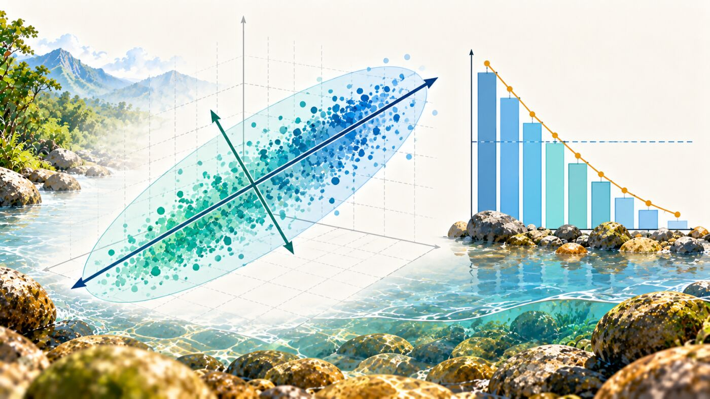
Pregunta: ¿Cuántos ejes hacen falta para resumir las diez variables ambientales?
La idea con dos variables
Antes del PCA completo, se rota el par más redundante (conductividad y caudal). Estandarizadas, el CP1 sigue la diagonal de la nube:
Código
# PCA de dos variables (transformadas y estandarizadas)
pca_par <- prcomp(X_log[, c("Conductividad", "Caudal")], scale. = TRUE)
round(100 * pca_par$sdev^2 / sum(pca_par$sdev^2), 1)[1] 91.4 8.6Código
# Muestras estandarizadas y direcciones de los dos ejes
par_z <- as_tibble(scale(X_log[, c("Conductividad", "Caudal")])) %>%
mutate(Tributario = F_alg$Tributario)
v <- pca_par$rotation
ggplot(par_z, aes(x = Conductividad, y = Caudal, color = Tributario)) +
geom_abline(slope = v[2, 1] / v[1, 1], intercept = 0, linewidth = 0.8) +
geom_abline(slope = v[2, 2] / v[1, 2], intercept = 0, linetype = "dashed") +
geom_point(size = 3) +
scale_color_manual(values = col_trib) +
coord_equal() +
labs(x = "Conductividad (z)", y = "Caudal (z)") +
theme_bw()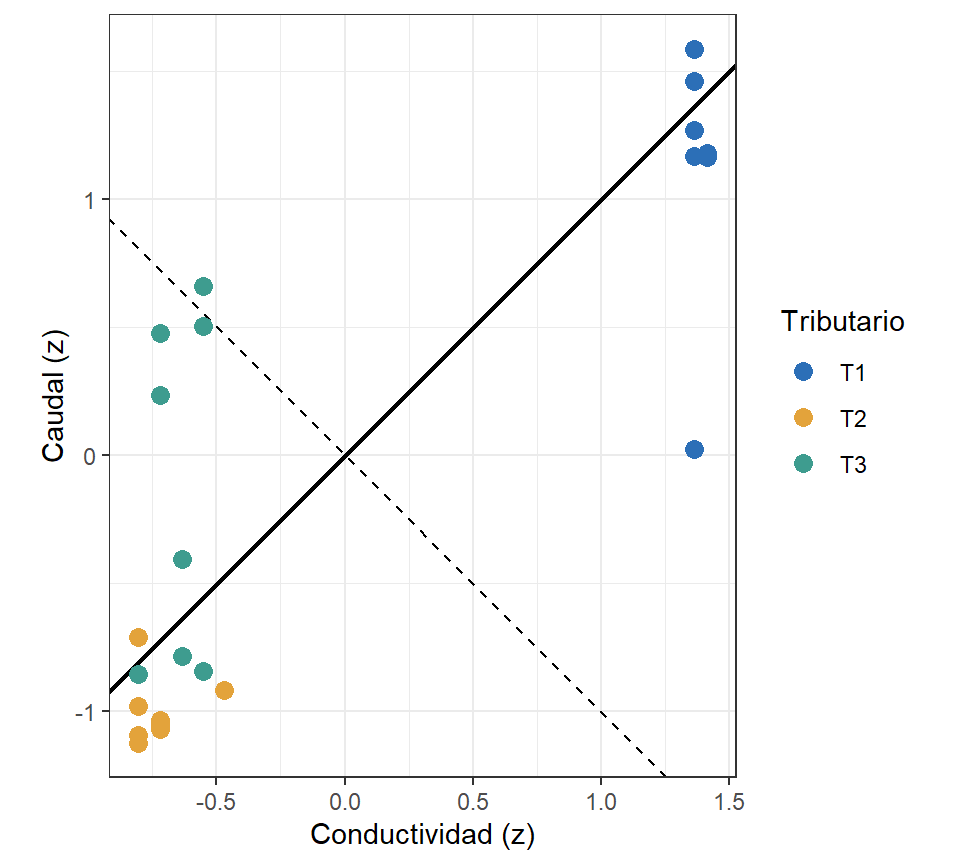
El CP1 recoge el 91 % de la varianza del par y el CP2 el 9 % restante: dos variables se resumen casi en una. Con diez variables se hace lo mismo en diez dimensiones.
PCA de las diez variables
Código
# PCA de correlación: X transformada y estandarizada dentro de prcomp()
pca <- prcomp(X_log, scale. = TRUE)
summary(pca)Importance of components:
PC1 PC2 PC3 PC4 PC5 PC6 PC7
Standard deviation 1.7659 1.3301 1.2211 1.1653 0.92853 0.73171 0.65006
Proportion of Variance 0.3118 0.1769 0.1491 0.1358 0.08622 0.05354 0.04226
Cumulative Proportion 0.3118 0.4887 0.6379 0.7736 0.85986 0.91340 0.95566
PC8 PC9 PC10
Standard deviation 0.51040 0.34017 0.25921
Proportion of Variance 0.02605 0.01157 0.00672
Cumulative Proportion 0.98171 0.99328 1.00000scale. = TRUE estandariza cada variable antes de rotar, así que no hace falta llamar a scale() antes. La primera fila de summary() es la desviación estándar de cada eje; su cuadrado es el autovalor.
Código
# Autovalores, porcentaje, acumulado y vara quebrada
autoval <- tibble(Eje = paste0("CP", 1:10),
Autovalor = pca$sdev^2,
Porcentaje = 100 * Autovalor / sum(Autovalor),
Acumulado = cumsum(Porcentaje),
`Vara quebrada` = bstick(pca))
autoval %>%
kbl(booktabs = TRUE, digits = c(0, 2, 1, 1, 2)) %>%
kable_classic(full_width = F) %>%
row_spec(0, bold = TRUE)| Eje | Autovalor | Porcentaje | Acumulado | Vara quebrada |
|---|---|---|---|---|
| CP1 | 3.12 | 31.2 | 31.2 | 2.93 |
| CP2 | 1.77 | 17.7 | 48.9 | 1.93 |
| CP3 | 1.49 | 14.9 | 63.8 | 1.43 |
| CP4 | 1.36 | 13.6 | 77.4 | 1.10 |
| CP5 | 0.86 | 8.6 | 86.0 | 0.85 |
| CP6 | 0.54 | 5.4 | 91.3 | 0.65 |
| CP7 | 0.42 | 4.2 | 95.6 | 0.48 |
| CP8 | 0.26 | 2.6 | 98.2 | 0.34 |
| CP9 | 0.12 | 1.2 | 99.3 | 0.21 |
| CP10 | 0.07 | 0.7 | 100.0 | 0.10 |
Los autovalores suman 10, el número de variables: cada variable estandarizada aporta una unidad de varianza. El CP1 tiene λ₁ = 3.12 (31.2 %) y el plano CP1–CP2 acumula el 48.9 %.
Tres criterios de retención
Código
# Kaiser: ejes con λ > 1 (recogen más que una variable original)
n_kaiser <- sum(autoval$Autovalor > 1)
# Vara quebrada: ejes consecutivos que superan lo esperado si la varianza se repartiera al azar
n_vara <- which(autoval$Autovalor <= autoval$`Vara quebrada`)[1] - 1
c(Kaiser = n_kaiser, `Vara quebrada` = n_vara) Kaiser Vara quebrada.PC2
4 1 Código
# Sedimentación con los dos criterios
ggplot(autoval, aes(x = fct_inorder(Eje))) +
geom_col(aes(y = Autovalor), fill = "#9DBFE3") +
geom_line(aes(y = `Vara quebrada`, group = 1), color = "#C0392B", linewidth = 0.8) +
geom_point(aes(y = `Vara quebrada`), color = "#C0392B", size = 2) +
geom_hline(yintercept = 1, linetype = "dashed") +
labs(x = NULL, y = "Autovalor (λ)") +
theme_bw()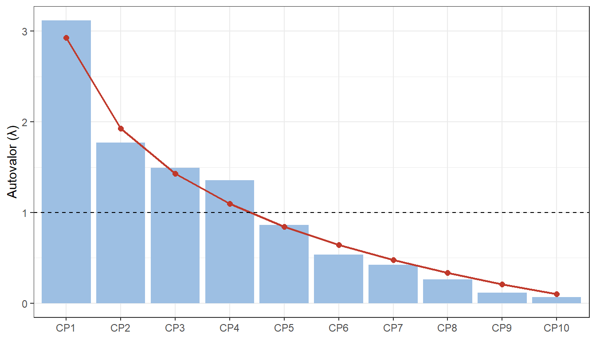
Los criterios no coinciden. Kaiser retiene 4 ejes; la vara quebrada solo 1 (λ₁ = 3.12 supera a 2.93, pero λ₂ = 1.77 no alcanza 1.93); en la sedimentación, el codo aparece después del CP1. El CP3 y el CP4 vuelven a superar la línea roja (1.49 > 1.43 y 1.36 > 1.10), pero la regla se aplica en orden: se retienen los ejes hasta el primero que no la supera. Kaiser suele retener de más cuando hay muchas variables; la vara quebrada es más conservadora (Jackson, 1993).
TipDecisión y reporte
Se grafica el plano CP1–CP2 (48.9 %), se interpreta el CP1 con confianza y el CP2 con cautela, y se declara el criterio: «Según la vara quebrada, solo el CP1 superó lo esperado por azar». El atajo de factoextra para la sedimentación es fviz_eig(pca, addlabels = TRUE), que grafica el porcentaje de varianza, pero no la vara quebrada.
Para discutir: el plano CP1–CP2 deja fuera la mitad de la varianza. ¿Qué podría haber en el CP3 y el CP4 (14.9 y 13.6 %)? ¿Cómo se revisaría sin graficar todos los planos?
Parte 3 — Cargas y contribuciones: qué dice cada eje
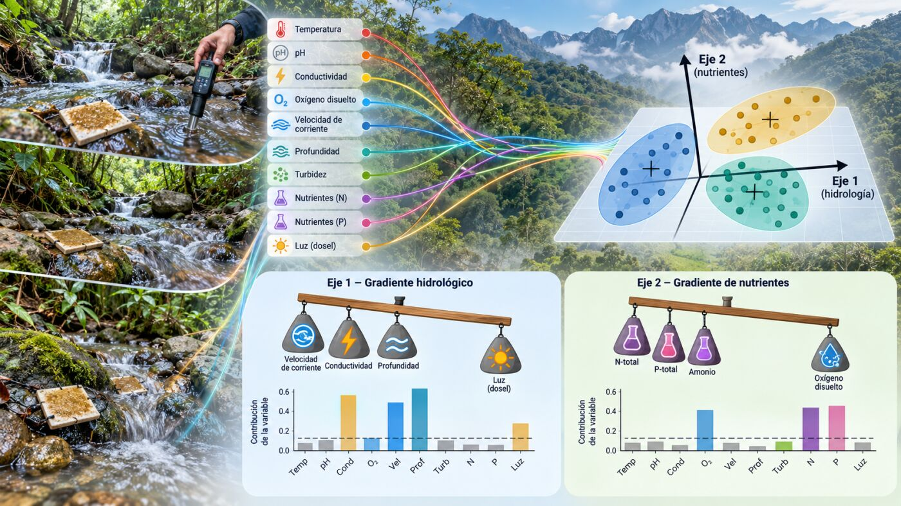
Pregunta: ¿Qué variables construyen el CP1 y el CP2, y qué gradiente ecológico representa cada uno?
Cargas
Código
# Cargas y contribuciones (carga² × 100) en los dos primeros ejes
cargas <- tibble(Variable = rownames(pca$rotation),
Carga_CP1 = pca$rotation[, 1], Carga_CP2 = pca$rotation[, 2],
Contr_CP1 = 100 * pca$rotation[, 1]^2,
Contr_CP2 = 100 * pca$rotation[, 2]^2) %>%
arrange(desc(Contr_CP1))
cargas %>%
kbl(booktabs = TRUE, digits = c(0, 2, 2, 1, 1),
col.names = c("Variable", "Carga CP1", "Carga CP2",
"Contribución CP1 (%)", "Contribución CP2 (%)")) %>%
kable_classic(full_width = F) %>%
row_spec(0, bold = TRUE)| Variable | Carga CP1 | Carga CP2 | Contribución CP1 (%) | Contribución CP2 (%) |
|---|---|---|---|---|
| Conductividad | 0.53 | 0.12 | 28.2 | 1.5 |
| Caudal | 0.49 | 0.16 | 23.8 | 2.7 |
| Vel_Corriente | 0.42 | 0.22 | 17.9 | 5.0 |
| Luz | -0.38 | 0.02 | 14.6 | 0.1 |
| Nitrito | 0.22 | -0.48 | 4.8 | 23.1 |
| Temp | 0.21 | 0.13 | 4.4 | 1.6 |
| Nitrato | 0.19 | -0.51 | 3.6 | 26.3 |
| Amonio | 0.11 | -0.51 | 1.2 | 26.4 |
| Oxigeno | -0.10 | 0.23 | 1.0 | 5.2 |
| pH | 0.08 | 0.29 | 0.6 | 8.1 |
Código
# Valores para el texto
crg <- function(v, eje) f2(pca$rotation[v, eje])- CP1 (31.2 %) — gradiente hidráulico y de conductividad: conductividad (0.53), caudal (0.49) y velocidad de corriente (0.42) en el extremo positivo, frente a la luz (-0.38). Las muestras con mayor caudal y conductividad reciben menos luz.
- CP2 (17.7 %) — gradiente de nutrientes nitrogenados: amonio (-0.51), nitrato (-0.51) y nitrito (-0.48) en el extremo negativo; pH (0.29) y oxígeno (0.23) en el positivo.
ImportanteEl signo de un eje es arbitrario
Si se multiplica un eje completo por −1 (cargas y coordenadas), el PCA es el mismo. Otro programa, otra versión de R o una muestra más pueden invertir el signo. Lo que se interpreta son las oposiciones dentro del eje (conductividad y caudal frente a luz), no si una variable es «positiva».
Contribuciones
Código
# Contribuciones al CP1 y al CP2
fviz_contrib(pca, choice = "var", axes = 1) + theme_bw()
fviz_contrib(pca, choice = "var", axes = 2) + theme_bw()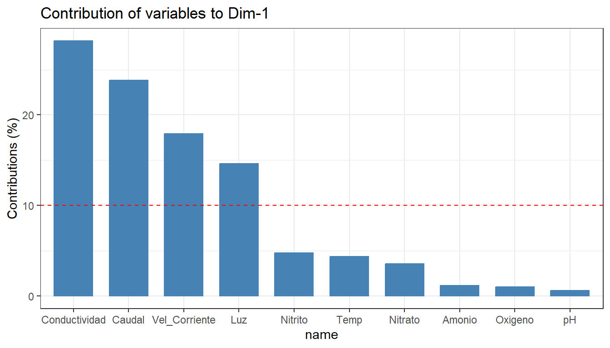
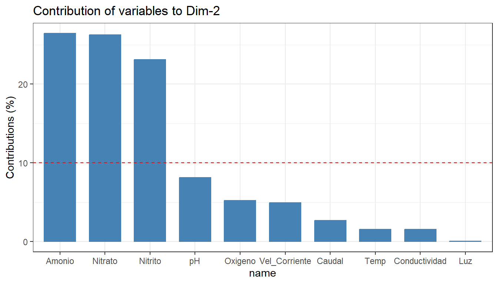
La conductividad aporta el 28.2 % del CP1, casi tres veces lo esperado (10 %). Cuatro variables superan esa referencia en el CP1 (conductividad, caudal, velocidad de corriente y luz) y tres en el CP2 (amonio, nitrato y nitrito).
Código
# Control: fviz_contrib() calcula lo mismo que carga² × 100
round(get_pca_var(pca)$contrib["Conductividad", 1:2], 1)Dim.1 Dim.2
28.2 1.5 De las cargas a las coordenadas
La coordenada de una muestra en un eje es la suma de sus valores estandarizados ponderados por las cargas:
Código
# Valores estandarizados de la muestra T1.1
z_T11 <- scale(X_log)[1, ]
# Coordenada en el CP1 y el CP2 a mano y la que entrega prcomp()
rbind(a_mano = c(sum(z_T11 * pca$rotation[, 1]), sum(z_T11 * pca$rotation[, 2])),
prcomp = pca$x[1, 1:2]) %>% round(2) PC1 PC2
a_mano 1.24 0.2
prcomp 1.24 0.2La muestra T1.1 queda en (CP1 = 1.24; CP2 = 0.2): su conductividad y su caudal están por encima de la media, y por eso se ubica en el lado positivo del CP1. El álgebra completa (autovectores de la matriz de correlación) está en el material complementario.
Para discutir: la temperatura casi no contribuye a los dos primeros ejes (4.4 y 1.6 %). ¿Significa que no importa para las microalgas? ¿Qué otra razón explicaría su bajo peso?
Parte 4 — Biplot: escalamientos, elipses y el tributario
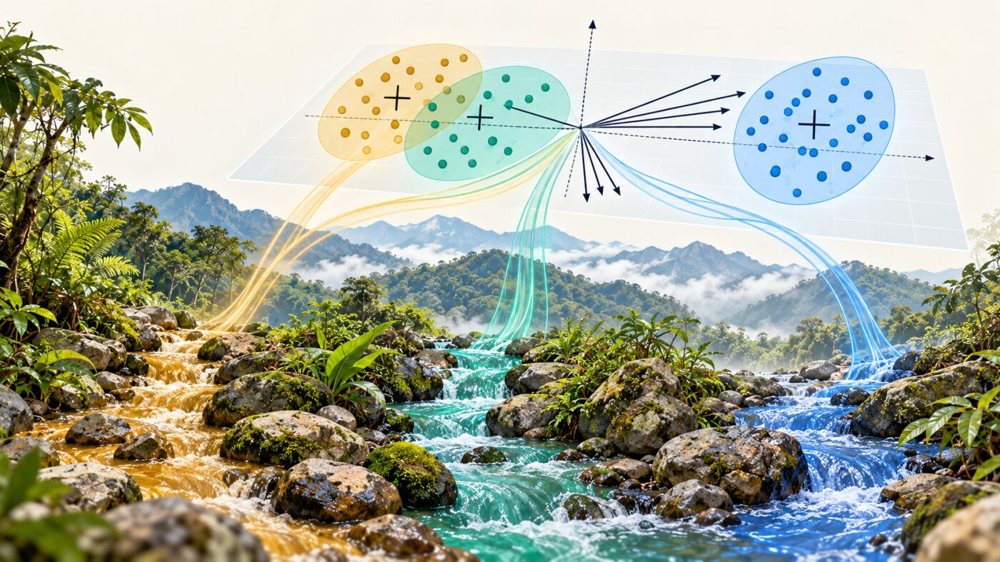
Pregunta: ¿Se separan los tres tributarios en el plano CP1–CP2? ¿Qué variables los distinguen?
Escalamiento 1 frente a escalamiento 2
Un biplot superpone muestras (puntos) y variables (flechas). Cómo se reparte la varianza entre unas y otras define el escalamiento, y con él lo que se puede leer. vegan lo controla con el argumento scaling; se ajusta el mismo PCA con rda():
Código
# El mismo PCA de correlación con vegan
pca_v <- rda(X_log, scale = TRUE)
# Control: autovalores iguales a los de prcomp()
round(rbind(prcomp = pca$sdev[1:4]^2, vegan = eigenvals(pca_v)[1:4]), 2) PC1 PC2 PC3 PC4
prcomp 3.12 1.77 1.49 1.36
vegan 3.12 1.77 1.49 1.36Código
# Dos biplots lado a lado: puntos (muestras) y flechas (variables) con cada escalamiento
par(mfrow = c(1, 2), mar = c(4, 4, 3, 1))
for (esc in 1:2) {
sc_m <- scores(pca_v, display = "sites", scaling = esc, choices = 1:2) # Muestras
sc_v <- scores(pca_v, display = "species", scaling = esc, choices = 1:2) # Variables
lim <- range(sc_m, sc_v) * 1.15
plot(sc_m, pch = 19, col = col_trib[F_alg$Tributario], asp = 1,
xlim = lim, ylim = lim, xlab = "CP1", ylab = "CP2",
main = paste("Escalamiento", esc))
abline(h = 0, v = 0, lty = 3, col = "grey60")
arrows(0, 0, sc_v[, 1], sc_v[, 2], length = 0.07, col = "grey25")
text(sc_v * 1.12, labels = rownames(sc_v), cex = 0.75, col = "grey25")
}
par(mfrow = c(1, 1))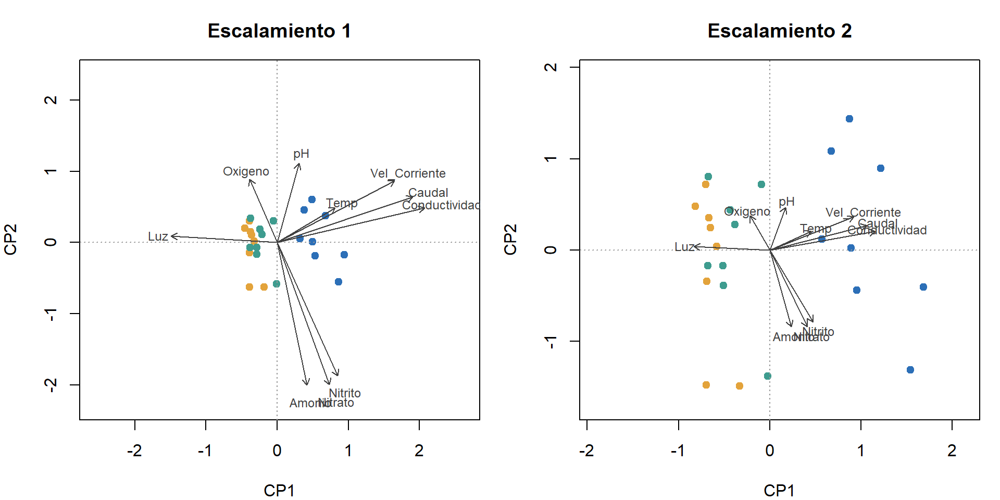
AdvertenciaEn vegan, las variables se llaman «species»
En rda(), las columnas de la matriz se llaman species, aunque sean variables ambientales. Por eso las flechas se piden con display = "species".
| Escalamiento | Interesan | Se lee | No se lee |
|---|---|---|---|
1 (scaling = 1) |
Las muestras | Distancias entre puntos ≈ distancias euclidianas entre muestras | Los ángulos entre flechas |
2 (scaling = 2) |
Las variables | Ángulo entre flechas ≈ correlación (agudo +, recto ≈ 0, obtuso −) | Las distancias entre puntos |
Código
# Escalamiento 2: coseno del ángulo entre las flechas de luz y conductividad
fl <- scores(pca_v, display = "species", scaling = 2, choices = 1:2)
cos_ang <- sum(fl["Luz", ] * fl["Conductividad", ]) /
(sqrt(sum(fl["Luz", ]^2)) * sqrt(sum(fl["Conductividad", ]^2)))
c(coseno_plano = round(cos_ang, 2),
r_real = round(R_X["Luz", "Conductividad"], 2))coseno_plano r_real
-0.98 -0.60 En el escalamiento 2, luz y conductividad apuntan en sentidos opuestos: el coseno de su ángulo en el plano (-0.98) indica una correlación negativa, que en los datos es r = -0.60. El plano exagera la correlación porque deja fuera la mitad de la varianza: el ángulo es una aproximación, mejor cuanto más largas son las flechas.
Biplot con elipses por tributario
Para la figura de resultados se usa fviz_pca_biplot(), que añade elipses y centroides por grupo. Los puntos son las coordenadas de las muestras (como en el escalamiento 1) y las flechas, las correlaciones de cada variable con los ejes, reescaladas para caber en la figura.
Código
# Centroides de cada tributario en los dos primeros ejes
centroides <- as_tibble(pca$x[, 1:2]) %>%
mutate(Tributario = F_alg$Tributario) %>%
group_by(Tributario) %>%
summarise(n = n(), CP1 = mean(PC1), CP2 = mean(PC2))
centroides %>%
kbl(booktabs = TRUE, digits = 2) %>%
kable_classic(full_width = F) %>%
row_spec(0, bold = TRUE)| Tributario | n | CP1 | CP2 |
|---|---|---|---|
| T1 | 8 | 2.29 | 0.28 |
| T2 | 8 | -1.39 | -0.31 |
| T3 | 8 | -0.90 | 0.02 |
Código
# Biplot con elipses de confianza por tributario
fviz_pca_biplot(pca, geom.ind = "point", pointsize = 2.5,
col.ind = F_alg$Tributario, palette = col_trib,
addEllipses = TRUE, ellipse.type = "confidence", ellipse.level = 0.95,
mean.point = FALSE, col.var = "grey25", repel = TRUE,
legend.title = "Tributario", title = NULL) +
# Centroides como cruces (mean.point = TRUE añade también un punto para las variables)
geom_point(data = centroides, aes(x = CP1, y = CP2, color = Tributario),
shape = 4, size = 5, stroke = 1.8,
inherit.aes = FALSE, show.legend = FALSE) +
labs(x = paste0("CP1 (", round(autoval$Porcentaje[1], 1), " %)"),
y = paste0("CP2 (", round(autoval$Porcentaje[2], 1), " %)")) +
theme_bw()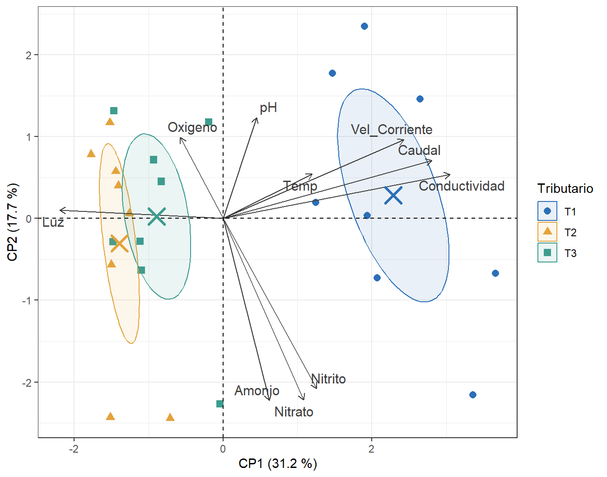
T1 se separa sobre el CP1 (centroide = 2.29): sus visitas tienen más conductividad, caudal y corriente. T2 (-1.39) y T3 (-0.90) quedan del lado de la luz y sus elipses se solapan. En el CP2, los tres centroides están cerca de cero: los nutrientes varían más entre visitas que entre tributarios.
NotaElipse de confianza frente a elipse de dispersión
ellipse.type = "confidence" dibuja la región de confianza de la media del grupo: se achica al aumentar n. Una elipse de dispersión ("norm") rodea a la mayoría de las muestras del grupo y no se achica con n. Si dos elipses de confianza no se solapan, sus centroides difieren en ese plano; si se usan las de dispersión, hay que decirlo en el pie de figura.
¿Cuánto del plano explica el tributario? envfit del factor
Código
# Ajuste del factor sobre el plano CP1–CP2 (999 permutaciones)
set.seed(2026)
ef_trib <- envfit(pca ~ Tributario,
data = F_alg, permutations = 999)
ef_trib
***FACTORS:
Centroids:
PC1 PC2
TributarioT1 2.2881 0.2827
TributarioT2 -1.3928 -0.3060
TributarioT3 -0.8952 0.0233
Goodness of fit:
r2 Pr(>r)
Tributario 0.5801 0.001 ***
---
Signif. codes: 0 '***' 0.001 '**' 0.01 '*' 0.05 '.' 0.1 ' ' 1
Permutation: free
Number of permutations: 999El tributario explica el 58 % de la variación de las coordenadas en el plano (r² = 0.58; p = 0.001, 999 permutaciones). Los centroides que imprime envfit() son los mismos de la tabla anterior.
AdvertenciaDiseño (RA1): la figura describe, no prueba
Las 8 visitas de un tributario son semanas sucesivas de colonización sobre los mismos sustratos: no son réplicas independientes, y las visitas de distintos tributarios se tomaron en las mismas fechas. envfit() permuta las muestras libremente, como si fueran intercambiables, así que su p es optimista. Además, el r² se calcula solo con los dos ejes graficados. La prueba formal de diferencias entre tributarios, con la visita como bloque, es la PERMANOVA del Taller 10.
TipCómo reportar el resultado
El PCA de correlación de las diez variables ambientales (transformadas con log10(x + 1), salvo el pH) retuvo un eje según la vara quebrada. El CP1 (31,2 %) ordenó las visitas según un gradiente de conductividad, caudal y velocidad de corriente, opuesto a la luz, que separó al tributario T1 de T2 y T3; el CP2 (17,7 %) reflejó la concentración de nutrientes nitrogenados (biplot con escalamiento 2). El tributario se asoció con el plano CP1–CP2 (envfit: r² = 0,58; p = 0,001; 999 permutaciones).
El párrafo nombra la matriz, la transformación, el criterio de retención, los porcentajes, la interpretación de cada eje, el escalamiento y la prueba (diap. 14).
Para discutir: T2 y T3 se solapan en el ambiente. ¿Significa que sus comunidades de microalgas también serán parecidas? ¿Qué análisis lo respondería?
Parte 5 — Variables suplementarias: géneros y riqueza
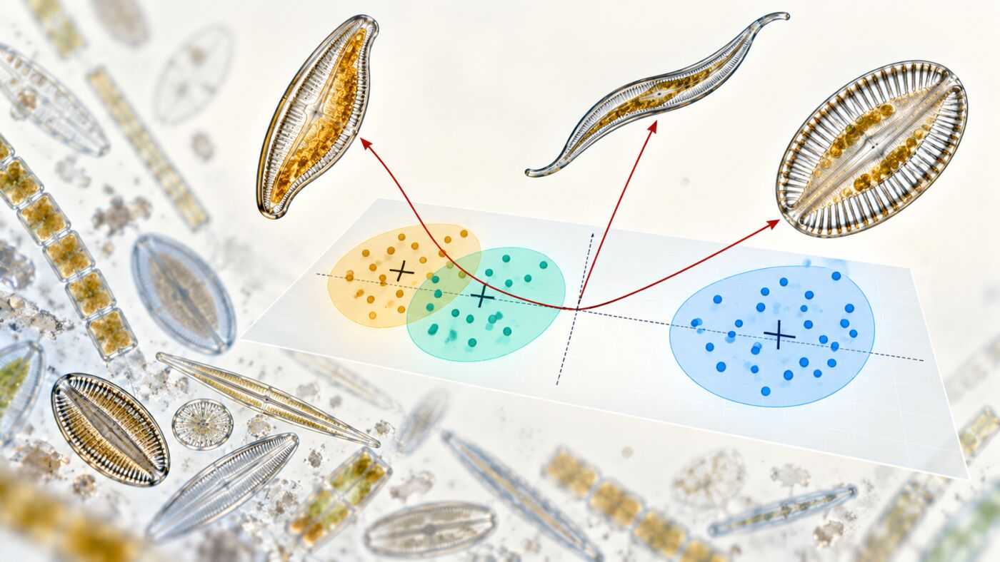
Pregunta: ¿Qué géneros de microalgas acompañan los gradientes ambientales del PCA?
Los géneros no construyeron los ejes: se proyectan después, como variables suplementarias. envfit() busca, para cada género, la dirección del plano en la que su abundancia aumenta más, y mide con r² qué tan bien la explica el plano. Las abundancias se transforman con Hellinger (Taller 5, Parte 5) y se agrega la riqueza (número de géneros por muestra).
Código
# Géneros con Hellinger y riqueza por muestra
Y_hel <- decostand(Y_alg, method = "hellinger")
riqueza <- specnumber(Y_alg)
# Ajuste de los 21 géneros y la riqueza sobre el plano CP1–CP2
set.seed(2026)
ef_sup <- envfit(pca, data.frame(Y_hel, Riqueza = riqueza), permutations = 999)Código
# Tabla: r², p y p ajustado (Holm) sobre la familia de los 21 géneros
tab_sup <- tibble(Variable = names(ef_sup$vectors$r),
r2 = ef_sup$vectors$r,
p = ef_sup$vectors$pvals)
tab_gen <- tab_sup %>%
filter(Variable != "Riqueza") %>%
mutate(p_Holm = p.adjust(p, method = "holm")) %>%
arrange(p)
tab_gen %>%
head(6) %>%
kbl(booktabs = TRUE, digits = c(0, 2, 3, 2),
col.names = c("Género", "r²", "p", "p (Holm)")) %>%
kable_classic(full_width = F) %>%
row_spec(0, bold = TRUE)| Género | r² | p | p (Holm) |
|---|---|---|---|
| Amphora | 0.41 | 0.009 | 0.19 |
| Gyrosigma | 0.39 | 0.012 | 0.24 |
| Surirella | 0.34 | 0.014 | 0.27 |
| Closterium | 0.26 | 0.052 | 0.94 |
| Cocconeis | 0.24 | 0.058 | 0.99 |
| Fragilaria | 0.22 | 0.069 | 1.00 |
Código
# Riqueza (prueba aparte)
tab_sup %>% filter(Variable == "Riqueza")# A tibble: 1 × 3
Variable r2 p
<chr> <dbl> <dbl>
1 Riqueza 0.0748 0.449Código
# Muestras por tributario y géneros con p < 0.05 (sin ajustar)
plot(pca$x[, 1:2], pch = 19, col = col_trib[F_alg$Tributario], asp = 1,
xlab = paste0("CP1 (", round(autoval$Porcentaje[1], 1), " %)"),
ylab = paste0("CP2 (", round(autoval$Porcentaje[2], 1), " %)"))
abline(h = 0, v = 0, lty = 3, col = "grey60")
plot(ef_sup, p.max = 0.05, col = "#C0392B")
legend("topleft", legend = names(col_trib),
col = col_trib, pch = 19, bty = "n")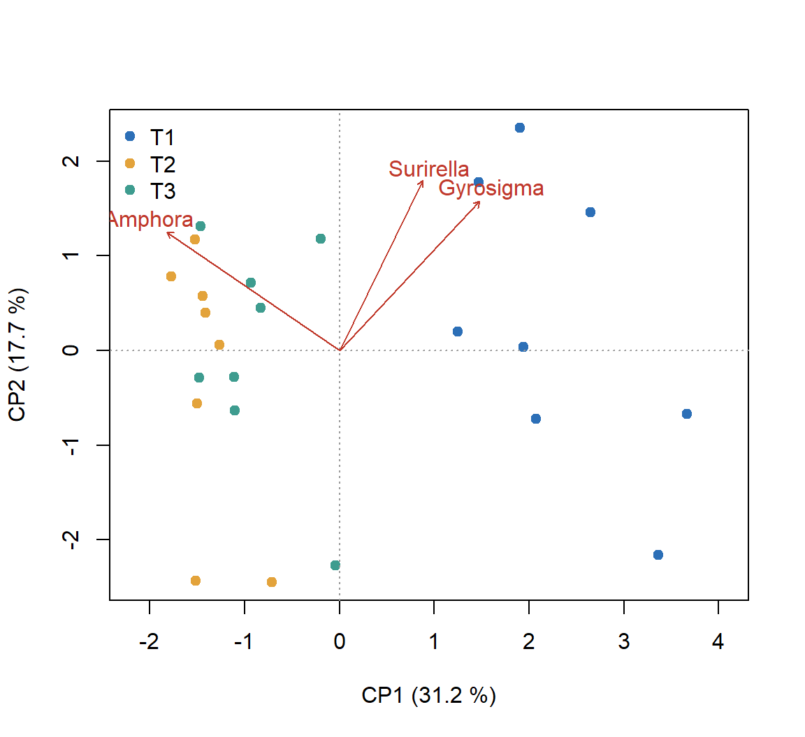
Amphora (r² = 0.41; p = 0.009), Gyrosigma (r² = 0.39; p = 0.012) y Surirella (r² = 0.34; p = 0.014) tienen p < 0.05 sin corregir. Pero se hicieron 21 pruebas con los géneros: al ajustar con Holm, el menor p pasa a 0.19 y ninguno se sostiene. La riqueza tampoco se asocia con el plano (r² = 0.07; p = 0.449).
ImportantePruebas múltiples
Con 21 pruebas al 5 %, se esperaría en promedio una «significativa» aunque ningún género respondiera al ambiente. El ajuste de Holm controla la probabilidad de al menos un falso positivo en la familia de pruebas. Cuando se ajusta, se declara cuál es la familia (aquí, los 21 géneros; la riqueza se probó aparte).
NotaDe envfit a la RDA
La lectura de esta Parte es exploratoria: sugiere que Amphora es más abundante del lado de la luz (T2 y T3) y Gyrosigma y Surirella del lado de la conductividad y el caudal (T1). La pregunta «¿cuánto de la composición de microalgas explican las variables ambientales?» se responde con una ordenación restringida, la RDA de Hellinger del Taller 9, que hace una sola prueba global en lugar de 21.
Para discutir: ¿por qué se transformaron los géneros con Hellinger antes de proyectarlos? ¿Qué pasaría con la flecha de Melosira, el género más abundante, si se usaran conteos crudos?
Lista de verificación antes de reportar un PCA
- ¿Todas las variables son continuas y medidas sobre la misma unidad muestral?
- ¿Se revisó la asimetría y se declaró qué variables se transformaron y con qué?
- ¿Se justificó el PCA de correlación (unidades distintas) o de covarianza (mismas unidades)?
- ¿Hay redundancia suficiente entre variables para que el PCA resuma (correlaciones moderadas o altas)?
- ¿Se reportaron los autovalores, el porcentaje de varianza y el acumulado de los ejes graficados?
- ¿Se declaró el criterio de retención (Kaiser, vara quebrada, sedimentación) y se interpretó con cautela lo que no lo cumple?
- ¿Se interpretaron los ejes por sus cargas o contribuciones, como oposiciones y no por el signo?
- ¿Se declaró el escalamiento del biplot y se leyó solo lo que ese escalamiento permite?
- ¿Se indicó si las elipses son de confianza o de dispersión?
- ¿Las variables suplementarias se reportaron con r², p, número de permutaciones y p ajustado?
- ¿Se aclaró que las elipses y
envfit()son descriptivos y cuál es la prueba formal?
Estudio de caso — ¿Cuándo un PCA no aporta? Ambiente del mesozooplancton
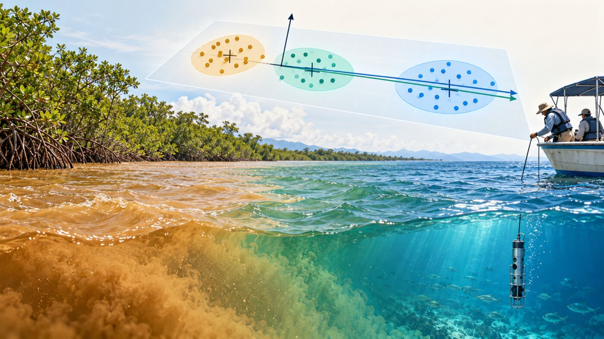
En el estuario del golfo de Urabá se registraron tres variables ambientales en cada muestra de mesozooplancton: temperatura, salinidad y densidad del agua (σt). Se quiere saber si un PCA de esas tres variables resume el ambiente de las seis estaciones, ubicadas en las zonas fluvial, estuarina y marina.
Antes de correr el código, se responde por escrito:
- La densidad del agua (σt) se calcula a partir de la salinidad y la temperatura. ¿Qué correlación se espera entre σt y la salinidad? ¿Y entre σt y la temperatura en un estuario tropical?
- Si dos de las tres variables son casi la misma, ¿cuántos ejes «reales» tiene la matriz?
- ¿Qué porcentaje de la varianza esperaría recoger el CP1? ¿Sería un buen resultado?
- ¿Qué ganaría un artículo con este PCA frente a reportar la salinidad sola?
Paso 1 — Base ancha del plancton
Código
# Hoja «Riqueza» depurada y base ancha (igual que en la Parte 3 del Taller 5)
biol <- read_xlsx("plancton.xlsx", sheet = "Riqueza") %>%
mutate(Groups = str_trim(Groups),
Station = factor(Station),
Size = factor(Size),
Layers = recode_factor(Layers,
Depth = "Profunda",
Surface = "Superficial"))
taxones <- unique(biol$Groups)
amb <- biol %>%
group_by(Station, Size, Layers) %>%
summarise(across(c(Temperature, Salinity, Density), mean),
.groups = "drop")
tax <- biol %>%
group_by(Station, Size, Layers, Groups) %>%
summarise(Abundance = sum(Abundance),
.groups = "drop") %>%
pivot_wider(names_from = Groups,
values_from = Abundance,
values_fill = 0)
zonas <- tibble(Station = factor(c(2, 4, 7, 9, 13, 15)),
Zona = factor(rep(c("Fluvial", "Estuarina", "Marina"), each = 2),
levels = c("Fluvial", "Estuarina", "Marina")))
pl_ancho <- amb %>%
left_join(tax, by = c("Station", "Size", "Layers")) %>%
mutate(Ab = rowSums(across(all_of(taxones)))) %>%
left_join(zonas, by = "Station")
# Matriz ambiental del plancton
X_pl <- pl_ancho %>% select(Temperature, Salinity, Density)
dim(X_pl)[1] 24 3Paso 2 — Correlaciones y rangos
Código
# Correlaciones y rango de cada variable
R_pl <- cor(X_pl)
round(R_pl, 3) Temperature Salinity Density
Temperature 1.000 0.093 0.08
Salinity 0.093 1.000 1.00
Density 0.080 1.000 1.00Código
sapply(X_pl, range) Temperature Salinity Density
[1,] 29.09276 15.46101 7.449451
[2,] 29.98974 33.74799 21.008433Paso 3 — PCA de las tres variables
Código
# PCA de correlación (sin transformar: variables simétricas y sin ceros)
pca_pl <- prcomp(X_pl, scale. = TRUE)
autoval_pl <- tibble(Eje = paste0("CP", 1:3),
Autovalor = pca_pl$sdev^2,
Porcentaje = 100 * Autovalor / sum(Autovalor),
`Vara quebrada` = bstick(pca_pl))
autoval_pl %>%
kbl(booktabs = TRUE, digits = c(0, 3, 2, 2)) %>%
kable_classic(full_width = F) %>%
row_spec(0, bold = TRUE)| Eje | Autovalor | Porcentaje | Vara quebrada |
|---|---|---|---|
| CP1 | 2.015 | 67.15 | 1.83 |
| CP2 | 0.985 | 32.84 | 0.83 |
| CP3 | 0.000 | 0.01 | 0.33 |
Código
round(pca_pl$rotation, 2) PC1 PC2 PC3
Temperature -0.12 0.99 0.01
Salinity -0.70 -0.08 -0.71
Density -0.70 -0.09 0.71Paso 4 — Biplot por zona
Código
# Centroides de cada zona
cent_zona <- as_tibble(pca_pl$x[, 1:2]) %>%
mutate(Zona = pl_ancho$Zona) %>%
group_by(Zona) %>%
summarise(CP1 = mean(PC1), CP2 = mean(PC2))
# Biplot con elipses por zona y centroides como cruces
fviz_pca_biplot(pca_pl, geom.ind = "point", pointsize = 2.5,
col.ind = pl_ancho$Zona, palette = col_zona,
addEllipses = TRUE, ellipse.type = "confidence",
mean.point = FALSE, col.var = "grey25", repel = TRUE,
legend.title = "Zona", title = NULL) +
geom_point(data = cent_zona, aes(x = CP1, y = CP2, color = Zona),
shape = 4, size = 5, stroke = 1.8, inherit.aes = FALSE, show.legend = FALSE) +
labs(x = paste0("CP1 (", round(autoval_pl$Porcentaje[1], 1), " %)"),
y = paste0("CP2 (", round(autoval_pl$Porcentaje[2], 1), " %)")) +
theme_bw()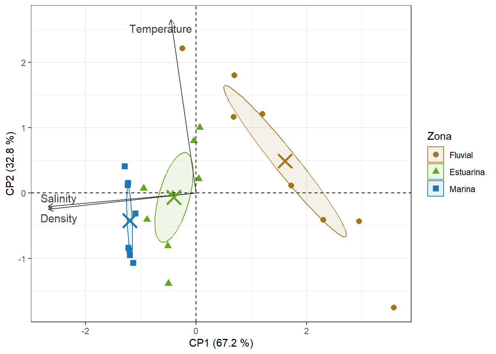
Código
# Zona sobre el plano CP1–CP2 y, como comparación, R² de la salinidad sola frente a la zona
set.seed(2026)
ef_zona <- envfit(pca_pl ~ Zona,
data = pl_ancho,
permutations = 999)
r2_sal <- summary(lm(Salinity ~ Zona,
data = pl_ancho))$r.squared
c(r2_plano = round(ef_zona$factors$r, 2),
r2_salinidad = round(r2_sal, 2))r2_plano.Zona r2_salinidad
0.54 0.77
NotaVerificación (desplegar después de responder)
- σt y salinidad tienen r = 1.000: son, en la práctica, la misma variable. La temperatura apenas se correlaciona con ellas (r = 0.09 con la salinidad) porque varía muy poco (de 29.1 a 30.0 °C); en este estuario, σt depende casi solo de la salinidad.
- Dos: un eje de salinidad (con σt) y otro de temperatura. El CP3 recoge el 0.006 % de la varianza: es la diferencia mínima entre salinidad y σt, prácticamente cero.
- El CP1 recoge el 67.2 %, un valor alto, pero no por un buen motivo: con cargas de -0.70 (salinidad) y -0.70 (σt), es solo la salinidad contada dos veces. El CP2 (32.8 %) es la temperatura sola (carga = 0.99). Los criterios tampoco coinciden: Kaiser retiene 1 eje (λ₂ = 0.985, apenas por debajo de 1) y la vara quebrada retiene 2 (λ₁ = 2.01 > 1.83 y λ₂ = 0.99 > 0.83), es decir, los dos ejes «reales».
- Casi nada. El plano CP1–CP2 separa las zonas (envfit: r² = 0.54), pero la salinidad sola explica más de la diferencia entre zonas (R² = 0.77, con un modelo lineal de un factor), porque el CP2 añade la temperatura, que casi no cambia entre zonas, y se interpreta directamente en unidades. Un PCA aporta cuando hay muchas variables parcialmente correlacionadas, como en las microalgas; con tres variables, dos de ellas redundantes, basta con reportar la salinidad (y, si interesa, la temperatura).
Lección para el estudio de caso: antes de un PCA se revisa la matriz de correlación. Si una variable es una función de otras (σt de salinidad y temperatura, biomasa de abundancia por talla, porcentajes que suman 100), se deja una sola.
Cierre — Una base para el futuro proyecto de grado
Actividad en clase (10 minutos, sin código)
En parejas, se responde sobre el proyecto de grado de cada integrante o sobre una base de su línea de investigación (diap. 17):
- ¿Qué variables entrarían a un PCA? ¿Son continuas y medidas sobre la misma unidad muestral? ¿Cuántas filas y columnas tendría la matriz?
- ¿Se estandarizarían? ¿Hace falta log10(x + 1) en alguna variable? ¿Alguna es redundante o se calcula a partir de otras?
- ¿Qué factor se usaría para colorear el biplot (sitio, época, tratamiento, nivel de perturbación) y qué patrón se esperaría ver?
- Si se quisiera saber si ese factor explica las diferencias, ¿qué análisis seguiría al PCA?
Antes de la próxima sesión (tarea corta)
Con una base propia (o con datos simulados plausibles del propio tema):
- Se prepara la matriz X: transformación y estandarización (Parte 1).
- Se ajusta el PCA y se reportan autovalores, criterio de retención y contribuciones (Partes 2 y 3).
- Se construye un biplot con elipses por un factor y se escribe un párrafo como el del recuadro «Cómo reportar el resultado» (Parte 4); se revisa la lista de verificación.
Este material es insumo de A3 (resultados preliminares, jueves 29 de octubre) y ayuda a elegir la ordenación del estudio de caso.
Material de apoyo

Para repasar y profundizar después de la sesión:
- Cuestionario 1 · Análisis de componentes principales — 12 preguntas de opción múltiple con pista y explicación, basadas en las Partes 1 a 5 y en el estudio de caso. Práctica sin nota.
- Material complementario · PCA — álgebra del PCA (autovectores de la matriz de correlación con
eigen()), PCA de las variables fisicoquímicas de bahías del Caribe (FQmarino.csv), PCA de Hellinger de macroinvertebrados de quebradas del PNN Tayrona (Tayrona.csv), biplot construido conggplot2y guardado automático de figuras y tablas.
Referencias
Borcard, D., Gillet, F., & Legendre, P. (2018). Numerical Ecology with R (2nd ed.). Springer. https://doi.org/10.1007/978-3-319-71404-2
Jackson, D. A. (1993). Stopping rules in principal components analysis: a comparison of heuristical and statistical approaches. Ecology, 74(8), 2204–2214. https://doi.org/10.2307/1939574
Kassambara, A., & Mundt, F. (2020). factoextra: Extract and Visualize the Results of Multivariate Data Analyses. https://CRAN.R-project.org/package=factoextra
Legendre, P., & Gallagher, E. D. (2001). Ecologically meaningful transformations for ordination of species data. Oecologia, 129(2), 271–280. https://doi.org/10.1007/s004420100716
Legendre, P., & Legendre, L. (2012). Numerical Ecology (3rd ed.). Elsevier.
Oksanen, J., Simpson, G. L., Blanchet, F. G., Kindt, R., Legendre, P., Minchin, P. R., et al. (2025). vegan: Community Ecology Package. https://CRAN.R-project.org/package=vegan
Osorio Ávila, F. J., Rodríguez Barrios, J., & Montoya Moreno, Y. (2015). Sucesión de microalgas perifíticas en tributarios del río Gaira, Sierra Nevada de Santa Marta-Colombia. Acta Biológica Colombiana, 20(2), 119–131. https://doi.org/10.15446/abc.v20n2.41932 — Base de datos
Microalgas.Vargas-Ospina, B., Córdoba-Bejarano, J. A., Riquelme-Bugueño, R., Flórez-Leiva, L., & Rodríguez-Barrios, J. (2025). Short-term variations of mesozooplankton in a tropical estuary, Caribbean Colombia. Wetlands, 45, 83. https://doi.org/10.1007/s13157-025-01951-7 — Base de datos
plancton.xlsx.
Nota
Las figuras y el código de este taller son de elaboración propia a partir de las bases citadas; no reproducen ejercicios ni código de las fuentes bibliográficas.